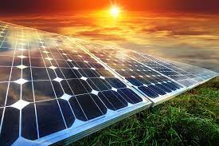

A photovoltaic (PV) cell, commonly called a solar cell, is a nonmechanical device that converts sunlight directly into electricity. Some PV cells can convert artificial light into electricity.
Sunlight is composed of photons, or particles of solar energy. These photons contain varying amounts of energy that correspond to the different wavelengths of the solar spectrum.
A PV cell is made of semiconductor material. When photons strike a PV cell, they will reflect off the cell, pass through the cell, or be absorbed by the semiconductor material. Only the photons that are absorbed provide energy to generate electricity. When the semiconductor material absorbs enough sunlight (solar energy), electrons are dislodged from the material's atoms. Special treatment of the PV cell's surface during manufacturing makes the front surface of the cell more receptive to the dislodged, or free, electrons so that the electrons naturally migrate to the surface of the cell.
The movement of electrons, which all carry a negative charge, toward the front surface of the PV cell creates an imbalance of electrical charge between the cell's front and back surfaces. This imbalance, in turn, creates a voltage potential similar to the negative and positive terminals of a battery. Electrical conductors on the PV cell absorb the electrons. When the conductors are connected in an electrical circuit to an external load, such as a battery, electricity flows through the circuit.
The PV cell is the basic building block of a PV system. Individual cells can vary from 0.5 inches to about 4.0 inches across. However, one PV cell can only produce 1 or 2 Watts, which is only enough electricity for small uses, such as powering calculators or wristwatches.
PV cells are electrically connected in a packaged, weather-tight PV panel (sometimes called a module). PV panels vary in size and in the amount of electricity they can produce. Electricity-generating capacity for PV panels increases with the number of cells in the panel or in the surface area of the panel. PV panels can be connected in groups to form a PV array. A PV array can be composed of as few as two PV panels to hundreds of PV panels. The number of PV panels connected in a PV array determines the amount of electricity the array can generate.
PV cells generate direct current (DC) electricity. DC electricity can be used to charge batteries that power devices that use DC electricity. Nearly all electricity is supplied as alternating current (AC) in electricity transmission and distribution systems. Devices called inverters are used on PV panels or in PV arrays to convert the DC electricity to AC electricity.
PV cells and panels produce the most electricity when they are directly facing the sun. PV panels and arrays can use tracking systems to keep the panels facing the sun, but these systems are expensive. Most PV systems have panels in a fixed position that are usually facing directly south in the northern hemisphere—or directly north in the southern hemisphere—at an angle that optimizes the physical and economic performance of the system.
The efficiency that PV cells convert sunlight to electricity varies by the type of semiconductor material and PV cell technology. The efficiency of commercially available PV panels averaged less than 10% in the mid-1980s, increased to around 15% by 2015, and is now approaching 25% for state-of-the art modules. Experimental PV cells and PV cells for niche markets, such as space satellites, have achieved nearly 50% efficiency.
When the sun is shining, PV systems can generate electricity to directly power devices such as water pumps or supply electric power grids. PV systems can also charge a battery to provide electricity when the sun is not shining for individual devices, single homes, or electric power grids.
Some advantages of PV systems are:
The first practical PV cell was developed in 1954 by Bell Telephone researchers. Beginning in the late 1950s, PV cells were used to power U.S. space satellites. By the late 1970s, PV panels were providing electricity in remote, or off-grid, locations that did not have electric power lines. Since 2004, most PV systems in the United States are grid-connected—they are connected to an electric power grid. These PV systems are installed on or near homes and buildings and at utility-scale power plants that have at least 1 megawatt of electric-generation capacity. Technological advances, lower costs for PV systems, and various financial incentives and government policies, especially tax credits and net metering, have helped to greatly expand PV use since the mid-1990s. Millions of grid-connected PV systems are now installed in the United States.
Electricity generation at utility-scale PV power plants increased from 6 million kilowatthours (kWh) (or 6,000 megawatthours [MWh]) in 2004 to about 162 billion kWh (or 161,651,000 MWh) in 2023. About 74 billion kWh (or 73,619,000 MWh) were generated by small-scale, grid-connected PV systems in 2023, up from 11 billion kWh (or 11,233,000 MWh) in 2014. Small-scale PV systems have less than 1,000 kilowatts of electricity-generation capacity. Most small-scale PV systems are located on buildings and are sometimes called rooftop PV systems.